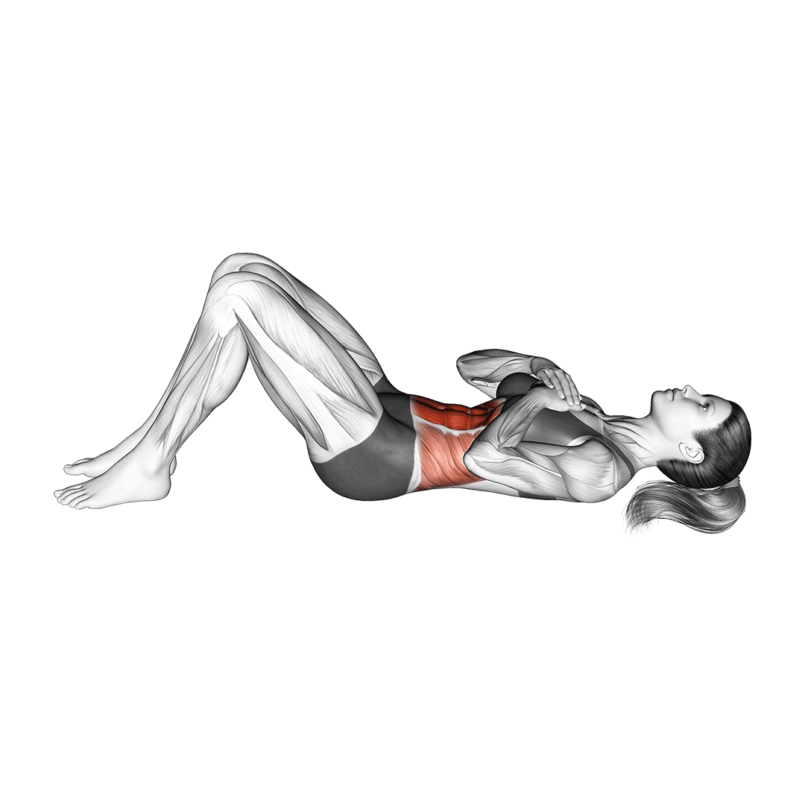

복근 운동 꿀팁
크런치
- 바닥에 누워 다리를 어깨너비로 벌리기
- 무릎을 세우기
- 양손 가슴 위에 X자로 올리기
- 시선은 천장을 바라보기
- 날개뼈 정도만 바닥에서 떨어지도록 윗복부 말아 올렸다가 내려오기
주의사항
- 목이 아픈 경우, 턱을 과하게 당기면서 동작할 경우 경추에 부담을 주어 통증이 생길 수 있어요. 준비 자세에서 얼굴을 바닥 쪽으로 살짝 밀어넣고 시작하거나 목에 힘을 빼고 최대한 윗 복부를 사용하여 진행하세요.
- 자극이 잘 안오는 경우, 너무 빠른 속도로 진행할 경우 하체에 개입이 커져 윗복부를 잘 사용할 수 없게 될 수 있어요. 개인에게 맞는 적당한 속도로 진행하세요.
- 동작이 어려운 경우, 근력이 부족해 상복부만 사용해 올라오는 동작이 어려울 경우 손바닥이 허벅지를 쓸면서 올라가도록 손동작을 바꾸거나 데드 버그 동작을 통해 기초 근력을 키워보세요.